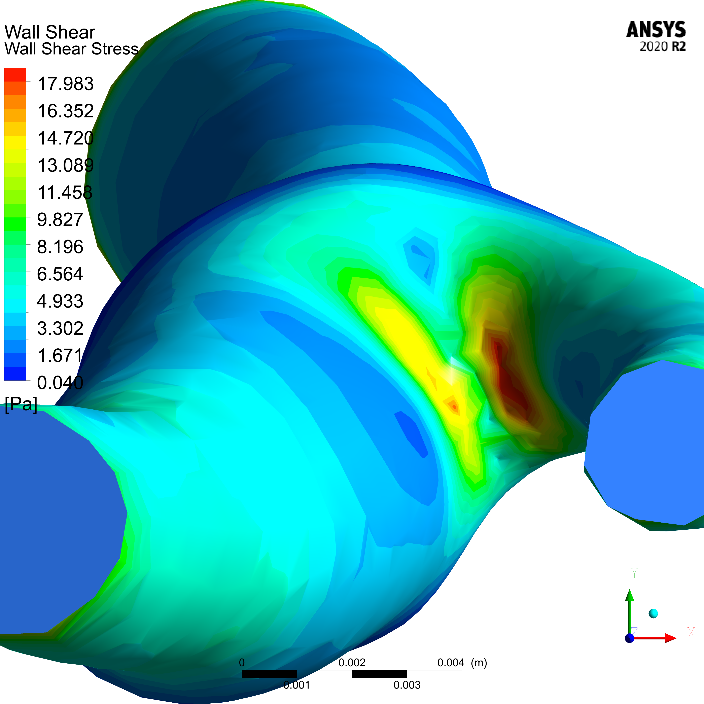
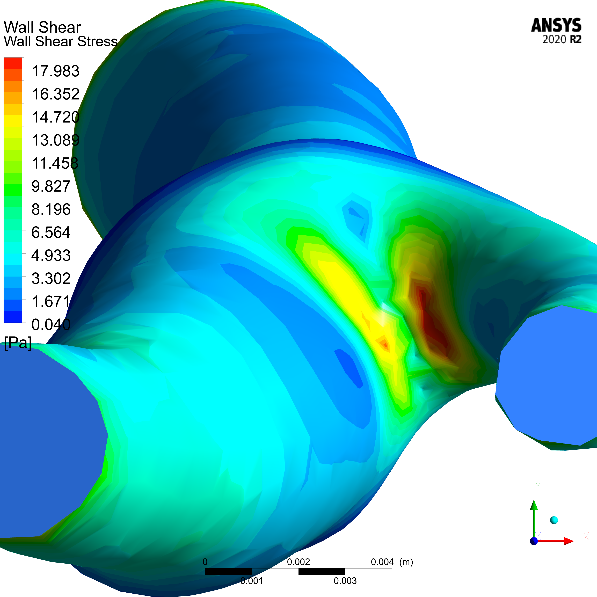
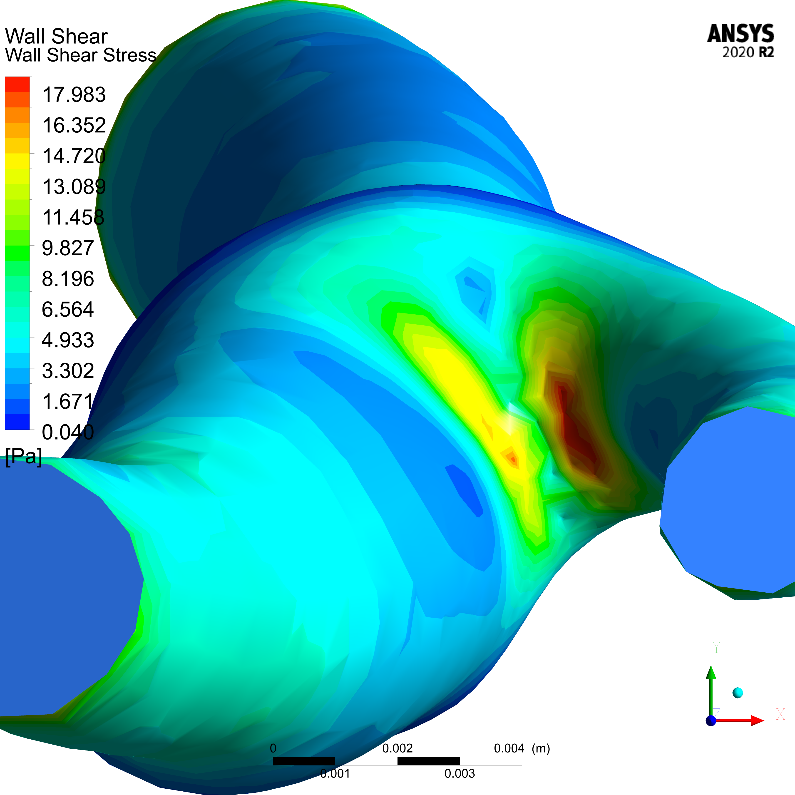
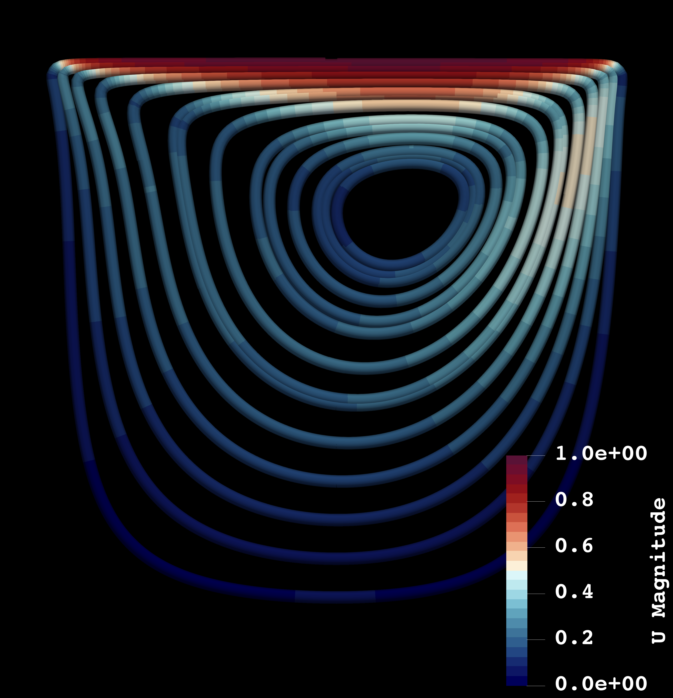
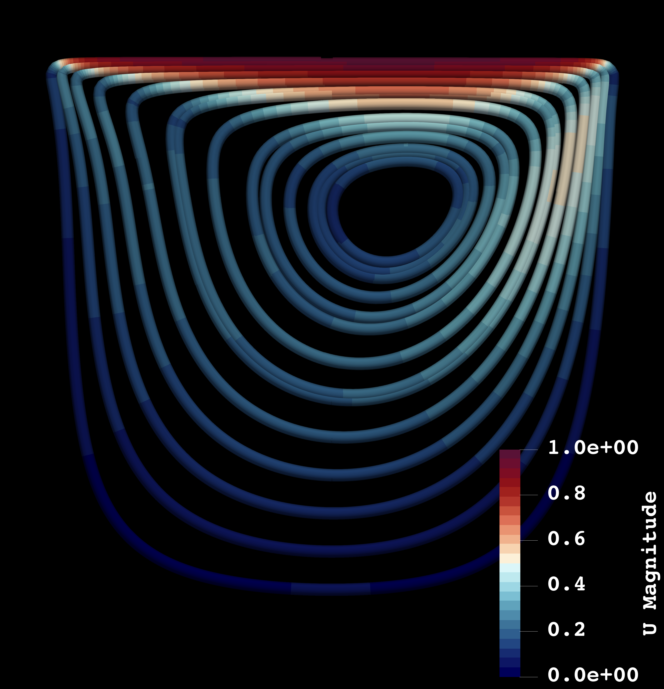
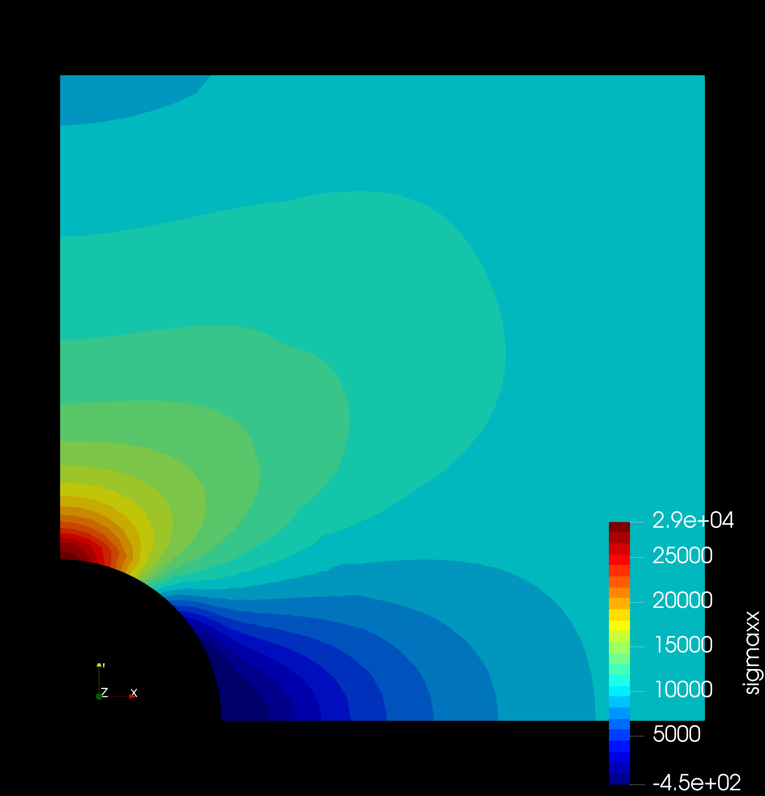
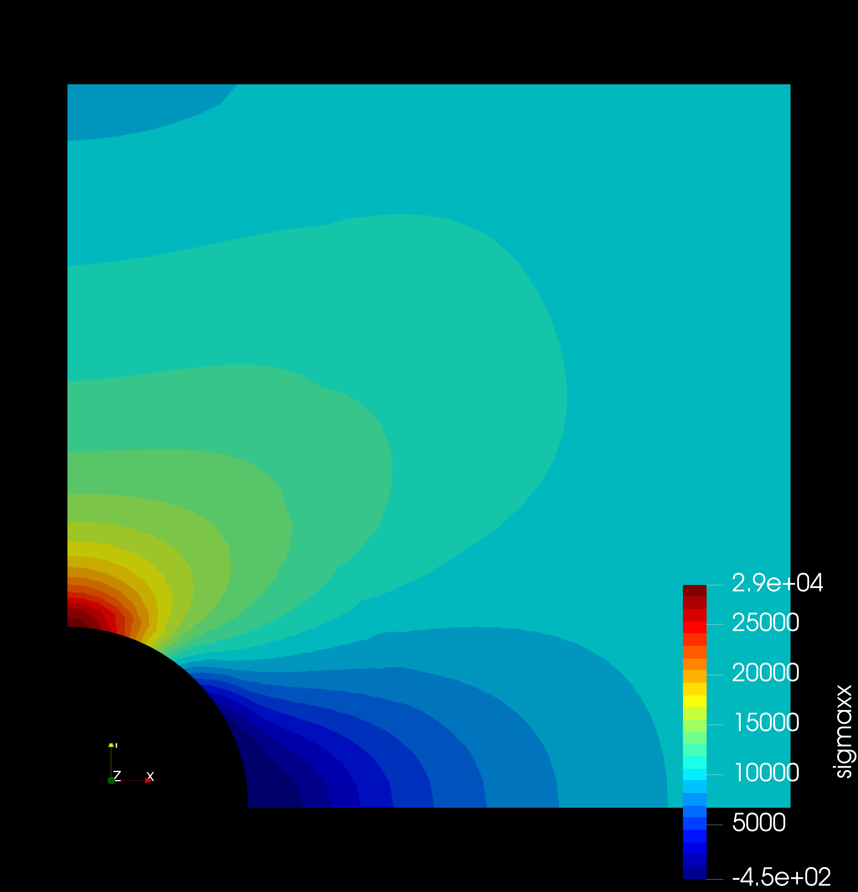

Bifurcating Artery Steady-State
Inlet: 0.315 m/s steady, Outlet: 13,332 Pa static
\(\rho\) = 1060 kg/m3, \(\nu\) = 3.30 x 10-6 m2/s
 

Inlet: 0.315 m/s steady, Outlet: 13,332 Pa static
\(\rho\) = 1060 kg/m3, \(\nu\) = 3.30 x 10-6 m2/s

Solver: IcoFoam
Top wall 1 m/s, Re = 100
 

Solver: SolidDisplacementFoam
 
 \(\sigma_{xx}\)
Stress field
Using vorticity transport equations
Re = 100
Steady flow field visualization for
\(u=2x^2-xy+z^2,\:v=x^2-4xy+y^2,\:w=2xy-yz+y^2\)
Streamline plotted from (-0.5,-0.5,-0.5)
©Tyler Naus. All Rights Reserved